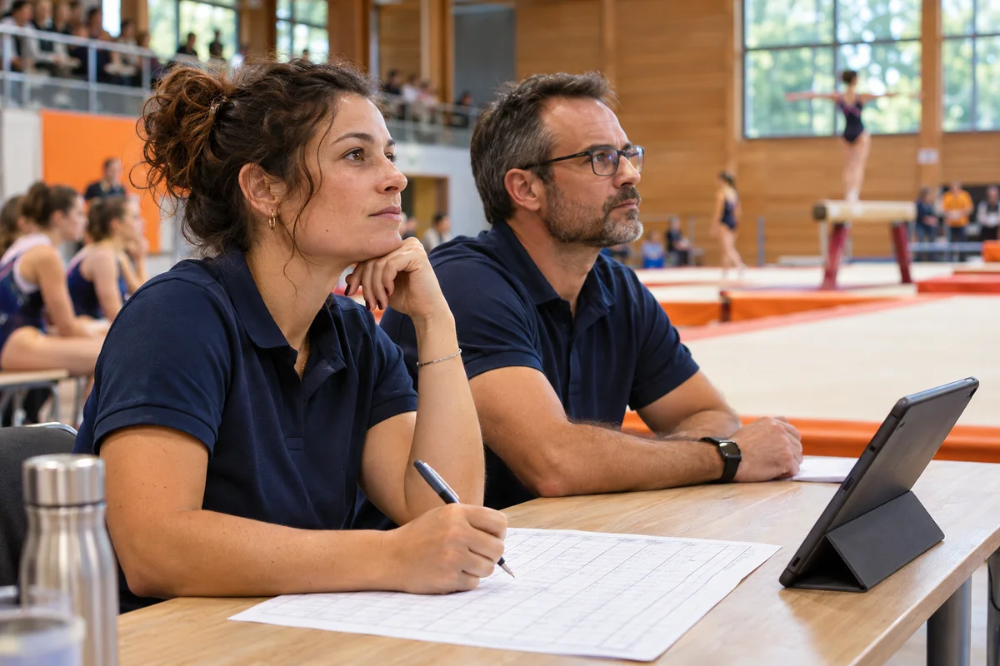

Programme en temps réel
Préparez les passages et ajustez le programme pendant l’événement. Rendez le déroulé consultable sur Internet par les équipes et les familles.

La table de jugement, la régie et le public ont chacun besoin d’informations différentes. NotaSport accompagne le déroulement des passages, la notation et la diffusion, jusqu’à la remise des résultats.
Parler de mon projet
NotaSport
Préparez les passages et ajustez le programme pendant l’événement. Rendez le déroulé consultable sur Internet par les équipes et les familles.
Organisez la saisie des notes par les juges. Selon l’événement, prévoyez un vote des juges, un vote interne ou un vote sur Internet.
Présentez le programme sur téléviseur ou vidéoprojecteur et préparez les habillages pour vos directs YouTube.
Coordonnez les intervenants avec la messagerie instantanée et prévoyez les affichages consacrés aux partenaires.
Préparez les résultats pour l’impression sur place ou leur envoi par e-mail aux équipes concernées.
Exemple d’usage
Une équipe passe plus tard que prévu. L’organisation ajuste le programme, la régie actualise l’affichage pour le public et les juges retrouvent le passage à noter. Une fois la compétition terminée, les résultats peuvent être imprimés ou envoyés aux équipes.
À propos de NotaSport
Partagez votre grille de notation, le nombre de juges et les règles de classement. Ces éléments permettent d’étudier la configuration adaptée à votre compétition.
Téléviseurs, vidéoprojecteurs, programme en ligne et habillages de diffusion correspondent à différents publics. Indiquez les écrans et le matériel de régie dont vous disposez.
Indiquez la discipline, la date de la compétition, le format de notation et les affichages souhaités.